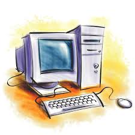

Home*
Current Events
Hello, my name is Eric Nguyen. The last name is pronounced "win" if you were ever wondering how to pronounce my last name. I am Vietnamese but was born and raised in America. Both of my parents never really graduated from high school so when I was born their legacy was past down on to me. Since I was born in America I have more of an opportunity to go to school unlike my parents. While growing up my parents would want the best for me so they would buy me video games and my very first computer. As I progress through life I became more tech saavy. As of August 2011 I decided on my major while heading in to college. What is my major? The major I decided on wasn't one major but two majors: Computer Science or Information Systems.
As of 2014 I will be working on the main components to my Bachelors of Science in Information Systems. With this bachelor I hope to get a job in the web development industry. I would like to be a part of a company that makes amazing webpages like
- Hot Dot Production
 either at Google, or even Riot Games. Why Riot Games? I want to work for Riot Games because I saw of their internship benefits and because I enjoy video games and their list of careers involving the web is a lot. But all of this is in the future and I will only be able to get to my dreams through hard work and patiences.By attending Information Systems 1800 I hope I can gain more knowledge on
either at Google, or even Riot Games. Why Riot Games? I want to work for Riot Games because I saw of their internship benefits and because I enjoy video games and their list of careers involving the web is a lot. But all of this is in the future and I will only be able to get to my dreams through hard work and patiences.By attending Information Systems 1800 I hope I can gain more knowledge on
- Hacks to Technology
- Basically, easing access for technology and gaining shortcuts to life
- General Technology